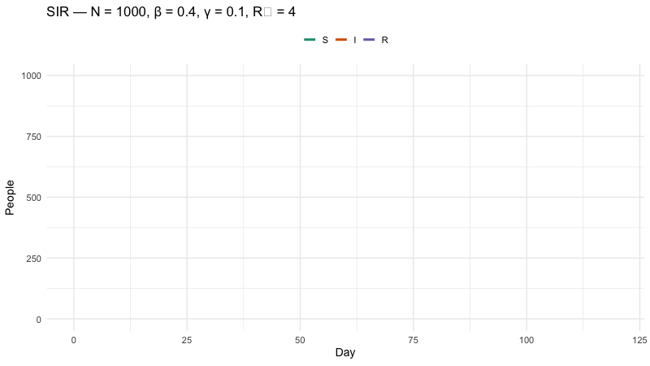
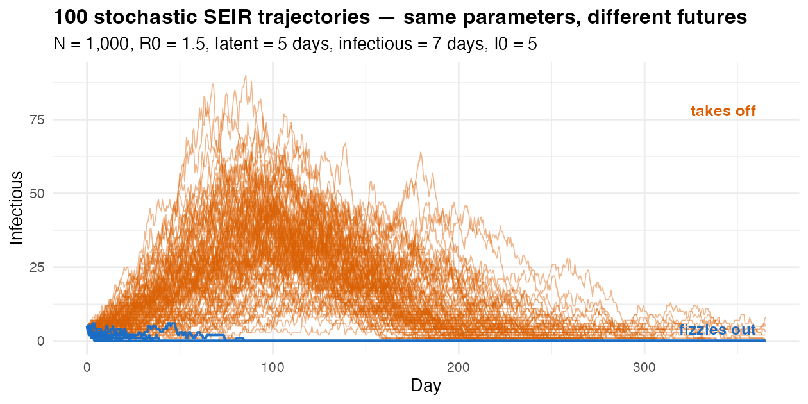

\[
\begin{aligned}
\frac{dS}{dt} &= -\beta \times S \times \frac{I}{N} \\
\frac{dI}{dt} &= +\beta \times S \times \frac{I}{N} - (\gamma \times I) \\
\frac{dR}{dt} &= +\gamma \times I
\end{aligned}
\]
R0 = β / γ.
β = 0.3 / day,
D = 1/γ = 7 days
R0 = 2.1.
SIR — Code
library(deSolve)sir_eq <-function(t, y, params) {with(as.list(c(y, params)), { dS <--beta * S * I / N dI <- beta * S * I / N - gamma * I dR <- gamma * Ilist(c(dS, dI, dR)) })}out <-ode(y =c(S =1e6-10, I =10, R =0),times =0:200,func = sir_eq,parms =c(beta =0.3, gamma =0.1, N =1e6)) |>unclass() |>as.data.frame() |>as_tibble()
1
The model is a function — takes time, state, parameters; returns rates of change.
2
with(as.list(c(y, params))) lets us write S, I, beta, gamma by name instead of y["S"], params["beta"].
3
The three derivatives — read out loud as one English sentence each (“susceptibles fall at rate β·S·I/N…”).
4
deSolve expects a list whose first element is the vector of derivatives.
5
ode() integrates from t = 0 to t = 200 in steps of 1.
SIR — Watch It Run

SIR — Trajectory
S drains as people get infected.
I rises, peaks, then falls.
R fills in — those who’ve been through it.
Extending SIR to SEIR
E = exposed but not yet infectious. Adds a latent period before transmission begins.
From SIR…
\[
\begin{aligned}
\frac{dS}{dt} &= -\beta \cdot S \cdot I / N \\
\frac{dI}{dt} &= +\beta \cdot S \cdot I / N - \gamma \cdot I \\
\frac{dR}{dt} &= +\gamma \cdot I
\end{aligned}
\]
…to SEIR
\[
\begin{aligned}
\frac{dS}{dt} &= -\beta \cdot S \cdot I / N \\
\frac{dE}{dt} &= +\beta \cdot S \cdot I / N - \sigma \cdot E \\
\frac{dI}{dt} &= +\sigma \cdot E - \gamma \cdot I \\
\frac{dR}{dt} &= +\gamma \cdot I
\end{aligned}
\]
One new equation. σ = 1 / mean latent period. Latency delays the peak — final size barely changes.
SEIR — Code
seir_eq <-function(t, y, params) {with(as.list(c(y, params)), { dS <--beta * S * I / N dE <- beta * S * I / N - sigma * E dI <- sigma * E - gamma * I dR <- gamma * Ilist(c(dS, dE, dI, dR)) })}
1
The new line: people who got infected enter E first, notI.
2
dI changes — the source is now σ · E, not β · S · I / N directly.
3
The state vector grows by one — dE is added, in the same order as the initial conditions.
SIR vs SEIR — Same R0, Different Timing
Common Extensions
Variant
New mechanism
Use when…
SEIRS
R → S (waning immunity)
Endemic respiratory pathogens, repeated waves
SEIRD
I → D (deaths)
Mortality matters (Ebola, COVID severity)
SVEIR
S → V (vaccinated)
Vaccination programmes (Session 3)
MSEIR
M = maternal immunity
Childhood diseases (measles in infants)
Age-structured
Compartments per age band
Heterogeneous mixing (Session 3)
Metapopulation
Compartments per location
Spatial spread between districts/states
Same skeleton — add boxes, add arrows, add equations.
SEIRS — Waning Immunity
seirs_eq <-function(t, y, params) {with(as.list(c(y, params)), { dS <--beta * S * I / N + omega * R dE <- beta * S * I / N - sigma * E dI <- sigma * E - gamma * I dR <- gamma * I - omega * Rlist(c(dS, dE, dI, dR)) })}# omega = 1 / mean duration of immunity
1
Recovered people return to S at rate ω — that’s the only new term in dS.
2
The mirror term in dR keeps the bookkeeping consistent (people leaving R are added to S).
With ω > 0 the system can settle into endemic oscillations — recurrent waves. The engine behind seasonal flu and COVID re-infection patterns.
SEIRD — Tracking Mortality
The flow out of I splits — fraction (1 − μ) recovers to R, fraction μ goes to D (cumulative deaths). μ = case fatality ratio.
seird_eq <-function(t, y, params) {with(as.list(c(y, params)), { dS <--beta * S * I / N dE <- beta * S * I / N - sigma * E dI <- sigma * E - gamma * I dR <- (1- mu) * gamma * I dD <- mu * gamma * Ilist(c(dS, dE, dI, dR, dD)) })}# mu = case fatality ratio
1
The flow out of I splits — a fraction (1 − μ) recovers.
2
The remaining fraction μ goes to D (cumulative deaths).
\(D\) = cumulative deaths.
Stochastic Reality
Same R0 = 1.5. Same parameters. Different futures.

Real outbreaks are noisy, especially when case counts are small. With I0 = 5, about 11/100 chains fizzle out and never become an outbreak — even though the deterministic model would always predict a wave.
Group Work
Group
Disease
R0
D (days)
1
Measles-like
15
8
2
Flu-like
1.5
4
3
Ebola-like
2
10
4
COVID-19 like
3
7
For your group:
Run the SIR script.
Before plotting, try to guess the peak time and final size.
Compare prediction to plot.
Bonus:
Extend to SEIR (σ = 1/5). What changed? What didn’t?
Group Work — Results
Final size depends on R0 alone — Kermack–McKendrick. Bigger R0 → more people infected. Peak timing depends on β and γ separately — Group 3 (longest D) peaks latest, even though its R0 is moderate.